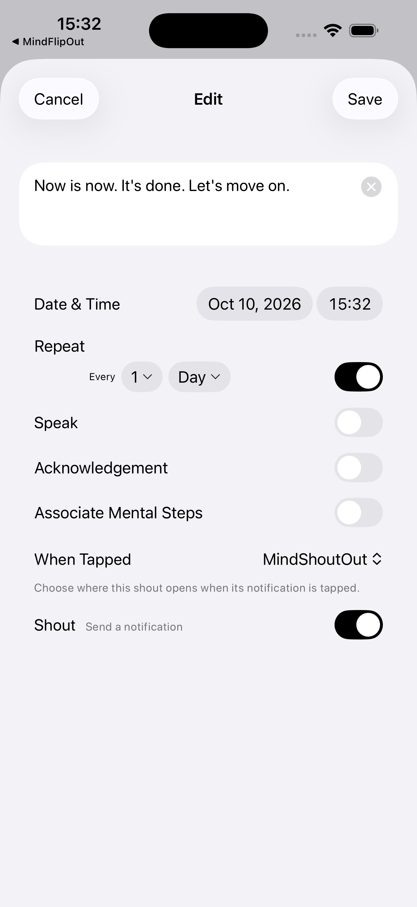
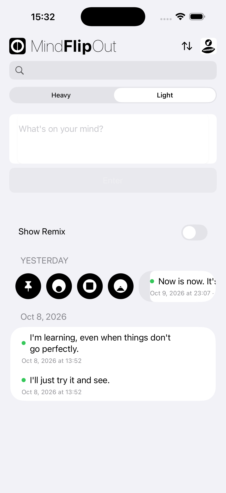
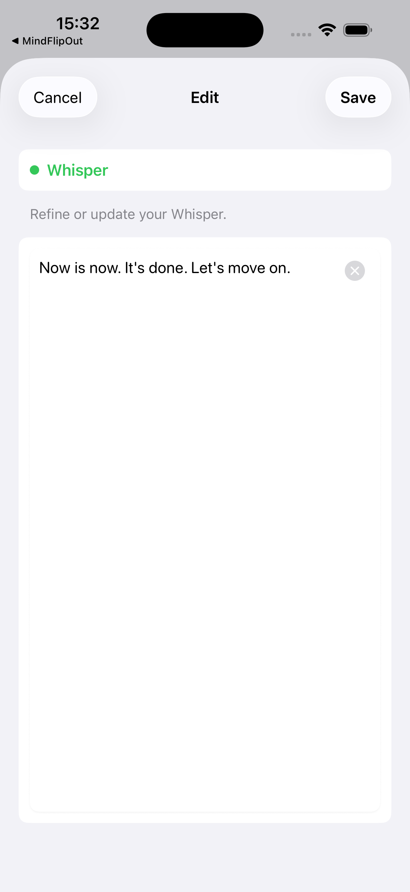
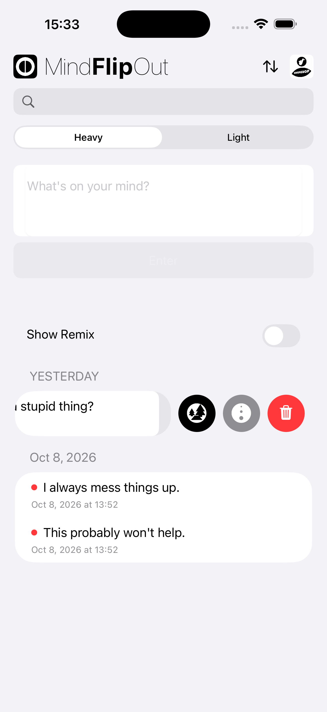
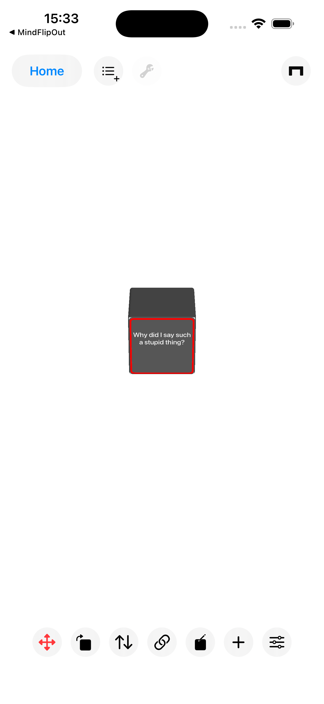
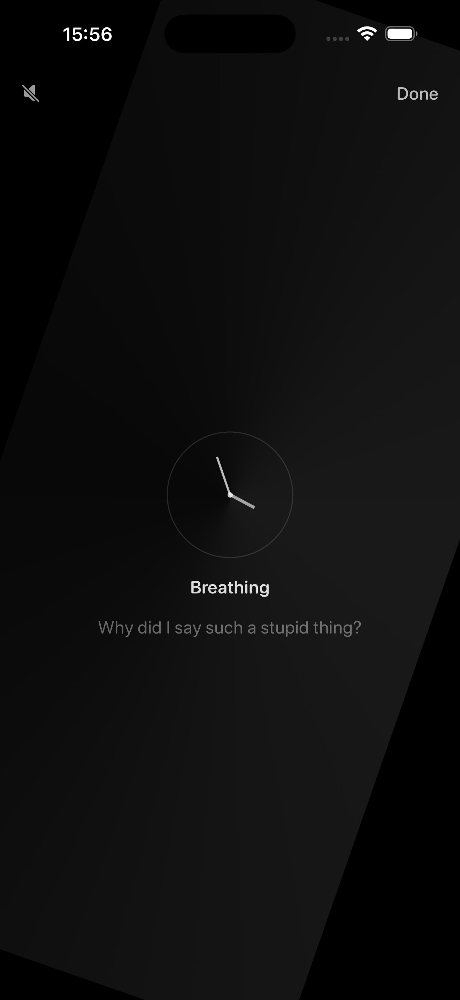
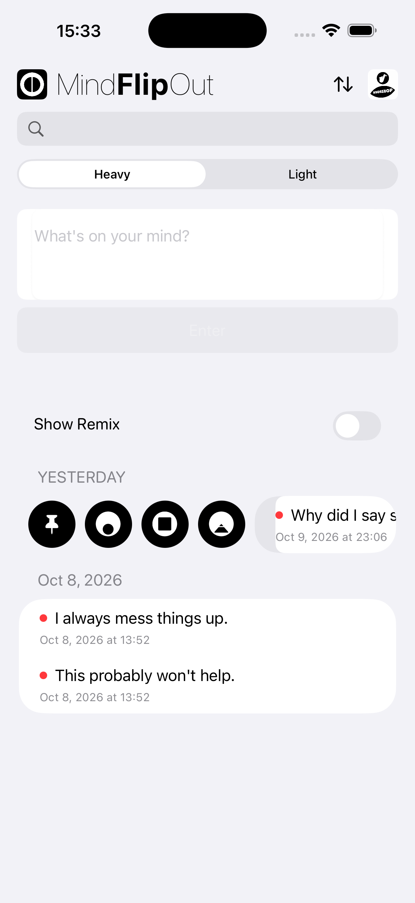
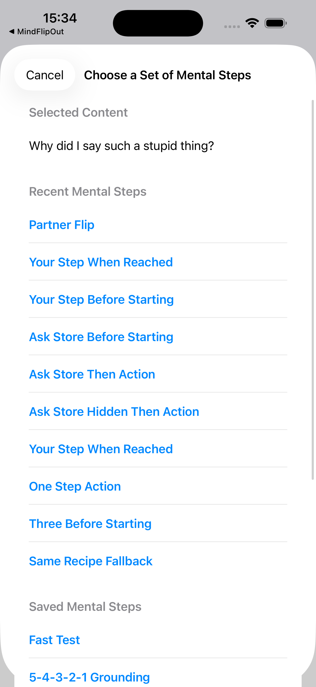

MindFlipOutに入力した思考は、HeavyでもLightでも、ほかのMINDBEBOPアプリに送ることができます。
リマインダーにしたり、MindZoneOutのセッション中に表示したり、 思考空間に居場所を与えたり、 MindEaseOutで手放したり、 MindEntryを使ってMental Destinationに向かって進んだりできます。
その思考をどう扱うかは、自分で選べます。
切り替えたLightの思考を、リマインダーとしてMindShoutOutに送ります。
思考を右にスワイプして、MindShoutOutのアイコンをタップします。
必要なときに、その思考をもう一度意識に呼び戻せます。

切り替えたLightの思考をMindZoneOutに送ると、セッション中にその思考が表示されます。
思考を右にスワイプして、MindZoneOutのアイコンをタップします。
その思考に反応したり、何か行動を起こしたりする必要はありません。ただ静かに、その思考と一緒に過ごせます。


HeavyまたはLightの思考を、MindBackyardの思考空間に送ります。
思考を左にスワイプして、MindBackyardのアイコンをタップします。
送った思考はThought Blockになり、空間内で動かしたり、配置を変えたり、そのまま置いておいたりできます。
それ以上、何かをする必要はありません。


過去に関する思考もあれば、まだ起きていない未来に関する思考もあります。
MindEaseOutを使って、今この瞬間には属さない過去の後悔や未来への心配を手放します。
思考を左にスワイプして、MindEaseOutのアイコンをタップします。

思考をMindEntryに送り、Mental Stepsを使って行動につなげます。
思考を右にスワイプして、MindEntryのアイコンをタップします。
Mental Stepsは、今いるところからMental Destinationに向かって進むことをサポートします。


ひとつの思考に、さまざまな可能性。どこへ向かわせるかは、自分で決められます。
Copyright © 2026 MINDBEBOP — All rights reserved.